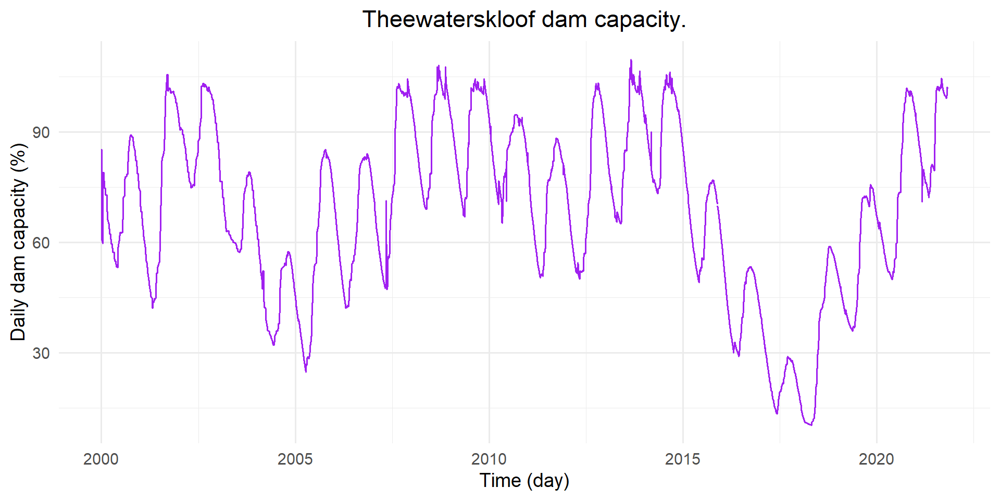
The plan for this project is to fit all the autoregressive models to both datasets, compare them and forecast using the best models. I’m hoping to then use these same datasets in another projects to see if SST and historic dam levels can be used to predict drought in Southern Africa (I’m not 100% sure how I’m going to do this but I think it’ll be interesting)
Purely for interests sake, here is a website that maps the sea surface temperature anomlaies: https://earth.nullschool.net/#current/ocean/surface/currents/overlay=sea_surface_temp_anomaly/orthographic=-100.92,9.72,366/loc=-99.041,-1.152
SST along the equatorial band in the eastern and central Pacific is much higher than past temperatures. This is aligning with experts prediciting a super El Nino in 2026/2027.
- Section & Topic: Autoregressive Models
- Project Type: Model implementaion
- Question / Aim: Is sea surface temperature in the eastern Pacific Ocean and Theewaterskloof dam levels predictable?
- Data Used: [https://www.pmel.noaa.gov/tao/drupal/disdel/] [https://odp-cctegis.opendata.arcgis.com/] I will reference this properly!
- Methods Used: AR,MA,ARMA,ARIMA,SARIMA,SARIMAX (at least this is the plan)
Key Findings
[cite: 1]
Reflections
- What I would do differently next time:[cite: 1]
Links
- Detailed Analysis & Code Script[cite: 1]
Predicting drought in Southern Africa
The aim of this project is to predict Theewaterskloof dam levels as well changes in sea surface temperatures in the eastern Pacific Ocean (along 95W) and use this data to predict drought occurrence in Southern Africa.
The El Nino phase of the El Nino Southern Oscillation (ENSO) is characterise by anomalous warming of sea surface temperatures in the eastern and central Pacific Ocean. This phenomenon typically starts between March and June, reaching its peak in December. An El Nino event causes warm and dry conditions over Southern Africa, typically taking effect 3-6 months after the onset of El Nino, in the Pacific. Over the 2015-2016 season, the El Nino weather patterns resulted in prolonged drought in Southern Africa with dam levels dropping and severe water restrictions being implemented.
The South African Weather Service (SAWS) is warning against a super El nino event in 2026-2027, as current sea surface temperatures rise beyond the threshold used to define a very strong El Nino.
We are interested in the Theewaterskloof dam current levels as Theewaterskloof is the main supplier of water to Cape Town.
References:
[https://onlinelibrary.wiley.com/doi/abs/10.1002/env.476?casa_token=Eg_zhVj43usAAAAA%3Ar0WptInFBau9fa2gbi2g7VfKEkwccQlk-l0YIV8mbMZnQvBcHiz9Cc_yBXPmfHgftiHsExL1riAtWaHZKw]
[https://www.thelancet.com/journals/lancet/article/PIIS0140-6736(03)12421-X/fulltext]
[https://mg.co.za/the-green-guardian/2026-09-01-the-saws-warns-exceptionally-strong-2026-2027-el-nino-could-bring-severe-heatwaves-to-sa/]
Exploratory Data Analysis
In the Dam_Levels_from_2000 dataset there was one duplicated observation. The second observation was removed as, compared to the other observations, it appeared to be a mistake.
I need better justification for this
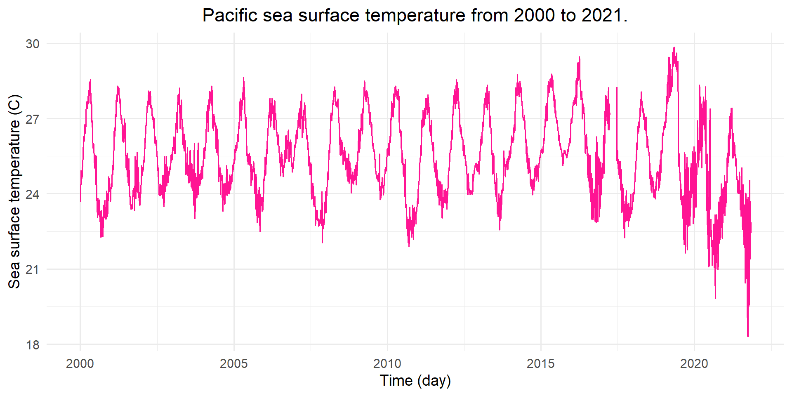
As seen in both Figure 1 and Figure 2 there is noise in the daily observations. The data is aggregated to monthyl observations to obtain a clearer visualisation of the seasonality present in the data.
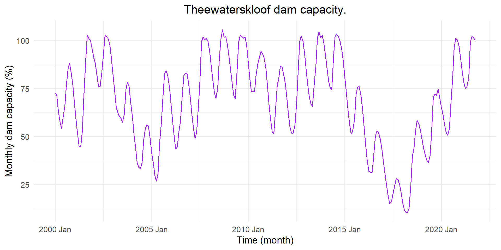
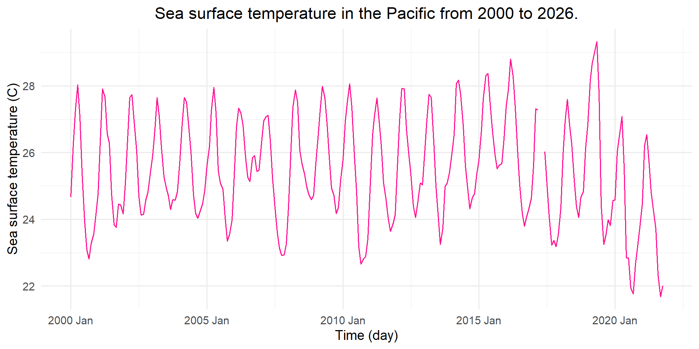
From Figure 3 and Figure 4 it is apparent that there is seasonality in the dataset.
We have 21 years worth of data. The Dam_Levels_from_2000 dataset has observations until January 2026 but due to missing observations in the sst dataset we have truncated the data. We are interested in forecasting until 2028. As the forecast horizon grows we can expect increased uncertainty in our predictions. Experts are prediciting an exceptionally strong El Nino event in 2026/2027. It will be interesting to see if these trends are picked up.
Southern Africa experienced severe droughts in 2015/2016 and 2018/2019. These years also saw significant El nino conditions.
I need to have a closer look at the data, the sst data has observations all the way up until today (continuoulsy uodating). It’s also worth noting that there is approximately a 3-6 month lag between increased sst and drought in southern africa - we could expand the number of observations for the dam levels dataset by approximately 6 months because of this
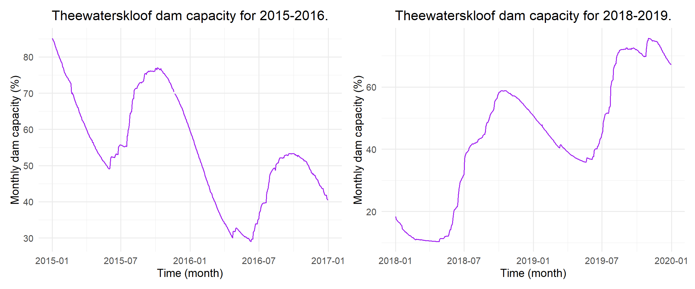
Look at the actual El Nino events here as well as sea surface temperatures 6 months before these observations for comparison.
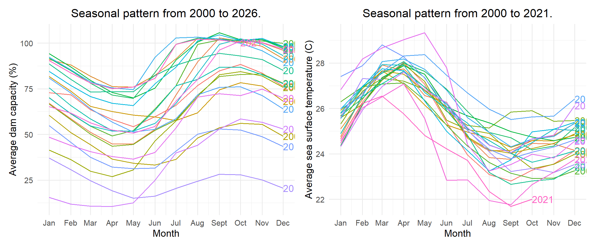
The sea surface temperatures and the dam levels have inverse trends. When sea surface tempertures are high, dam levels are low.
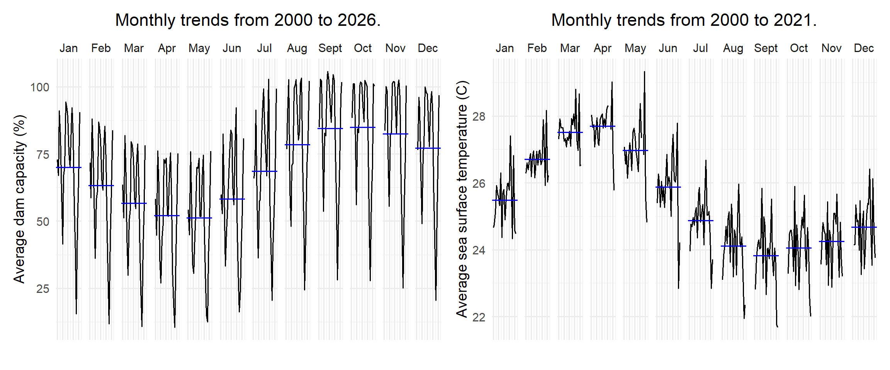
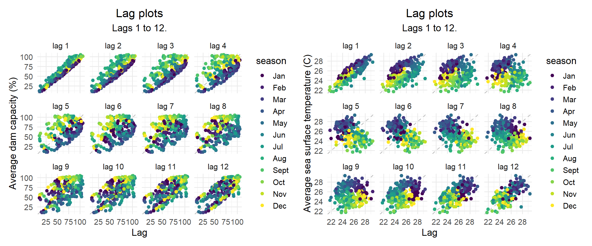
Need to mention autocorrelation herte.
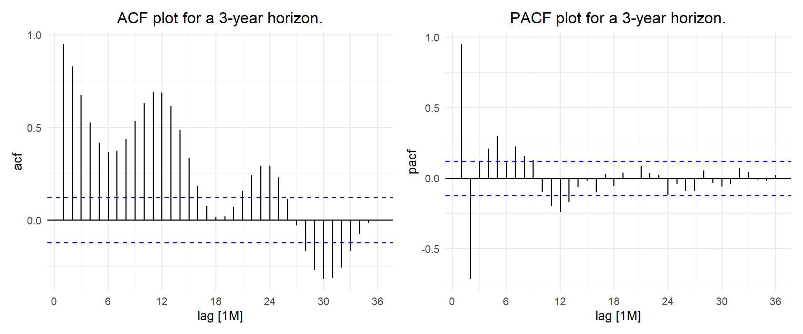
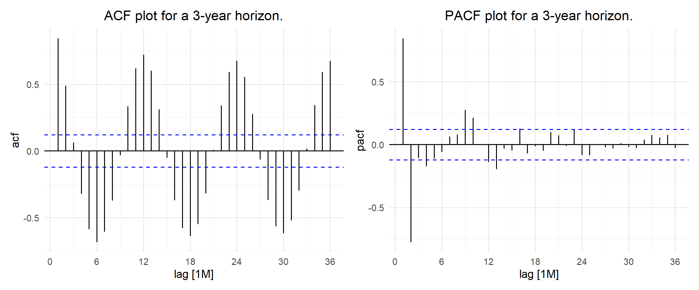
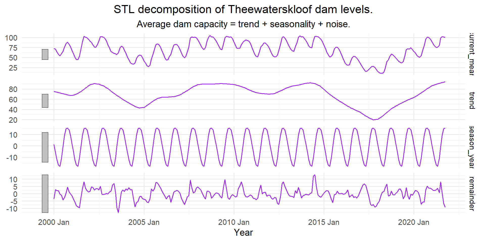
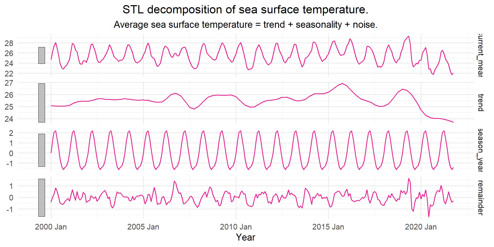
Comment on trends, seasonality etc for both sst and dam levels.
Mean Naive Seasonal naive Drift
[1,] 26.1521 7.320172 17.53497 7.320172Here we can see the errors assocated with each of our benchmark models. Since the Naive and Drift models both have the same error associated with them we will use the Drift model as a comparison to the other time series models used.
# A tibble: 1 × 1
nsdiffs
<int>
1 1# A tibble: 1 × 1
ndiffs
<int>
1 0# A tibble: 1 × 1
nsdiffs
<int>
1 1# A tibble: 1 × 1
ndiffs
<int>
1 0We only need to seasonally difference the Dam_Levels_from_2000 and sst datasets, no linear differencing is required.
Model fitting
I have naively fitted MA,AR,ARMA,ARIMA,SARIMA here just to get a gauge of how they look.
Dam levels
# A mable: 6 x 2
# Key: Model [6]
Model Fit
<chr> <model>
1 ar <ARIMA(1,0,0) w/ mean>
2 ma <ARIMA(0,0,1) w/ mean>
3 arma <ARIMA(1,0,1) w/ mean>
4 arima <ARIMA(1,1,1)>
5 sarima <ARIMA(1,0,1)(1,1,1)[12]>
6 auto_sarima <ARIMA(3,0,1)(1,1,0)[12]>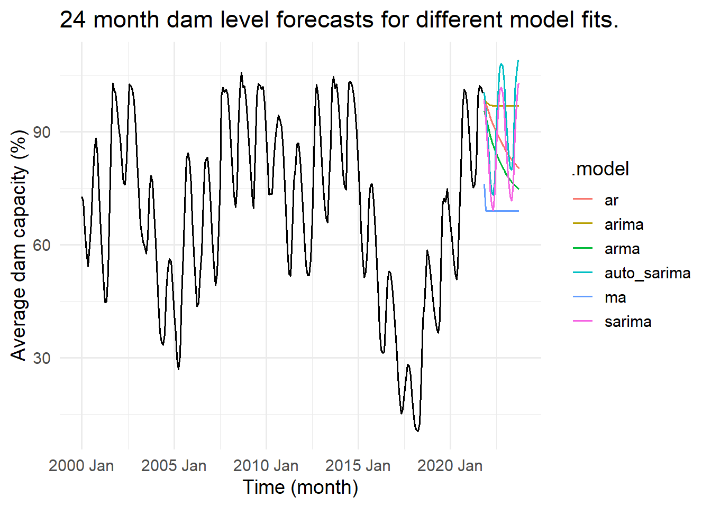
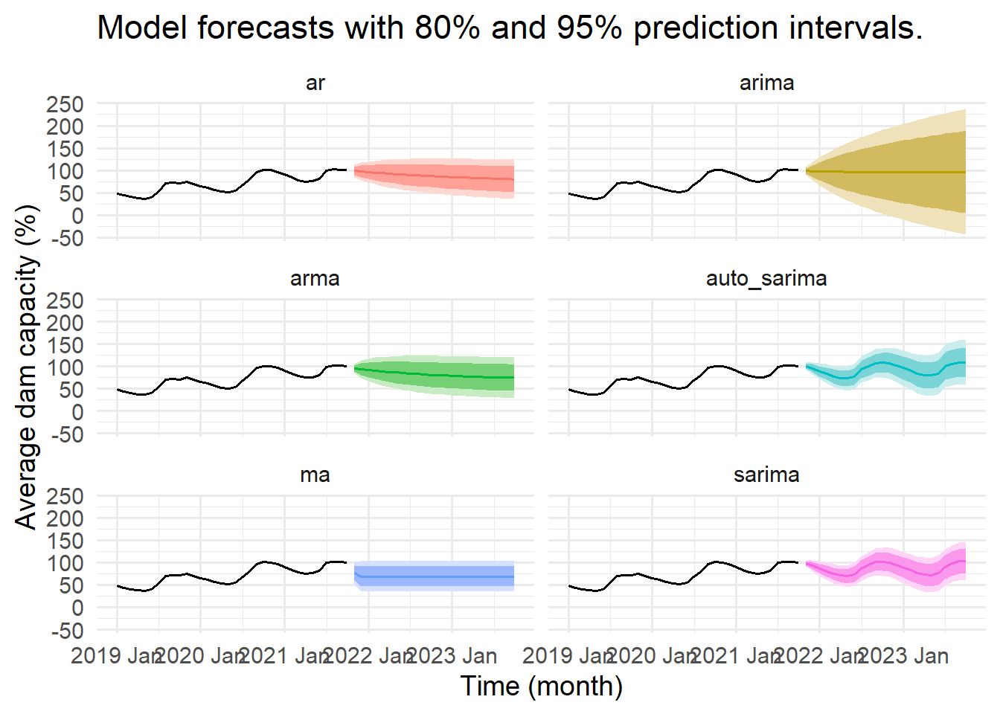
Sea surface temperature
# A mable: 6 x 2
# Key: Model [6]
Model Fit
<chr> <model>
1 ar <ARIMA(1,0,0) w/ mean>
2 ma <ARIMA(0,0,1) w/ mean>
3 arma <ARIMA(1,0,1) w/ mean>
4 arima <ARIMA(1,1,1)>
5 sarima <ARIMA(1,0,1)(1,1,1)[12]>
6 auto_sarima <ARIMA(2,0,1)(2,1,0)[12]>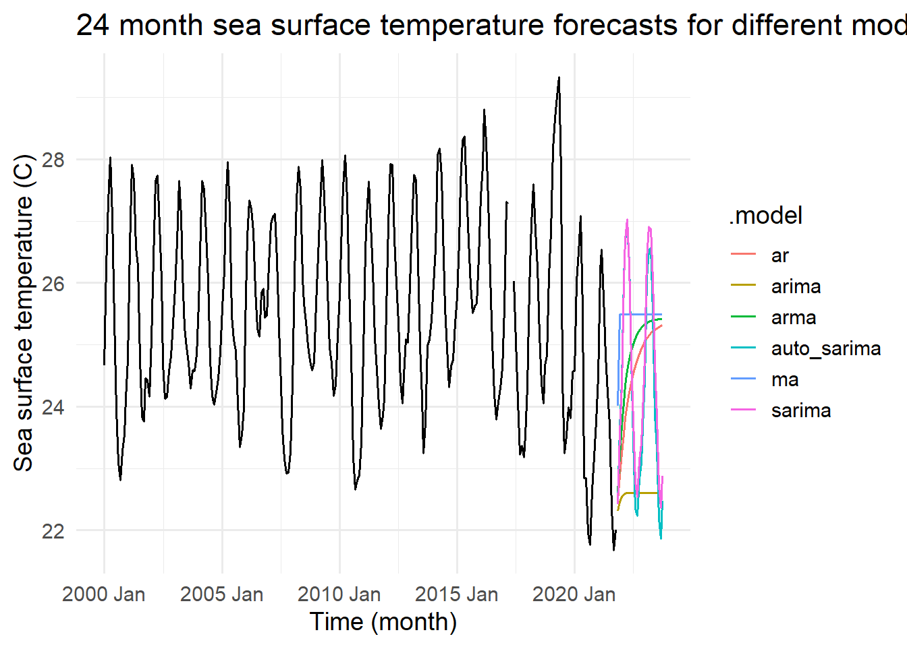
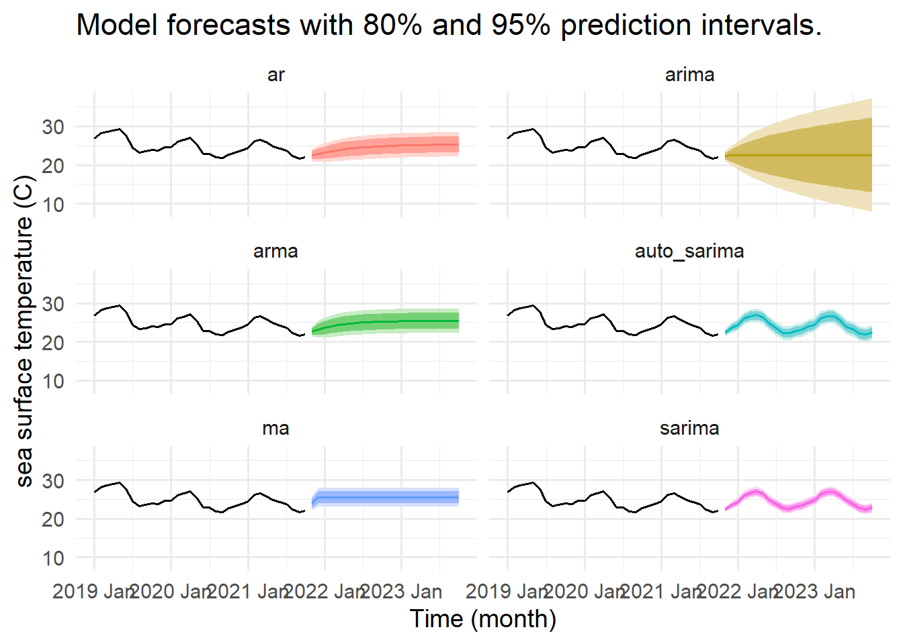